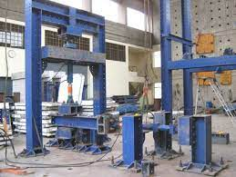
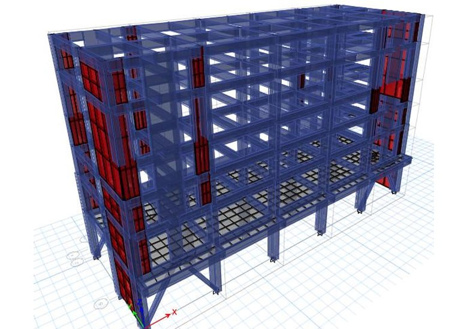

Soluciones de protección sísmica explicadas con claridad
No todas las estructuras necesitan la misma estrategia. En Velatoph evaluamos cada caso para definir soluciones técnicamente sólidas y comprensibles para quienes toman decisiones.

Aislamiento sísmico
Ayuda a reducir la cantidad de movimiento que pasa del suelo hacia la estructura, disminuyendo la demanda sísmica y mejorando el comportamiento del inmueble.

Disipación de energía
Permite absorber parte de la energía generada durante un sismo para reducir deformaciones, movimientos excesivos y posibles daños.

Análisis y diseño sísmico
Estudiamos el comportamiento estructural para proponer soluciones más seguras, eficientes y compatibles con las necesidades del proyecto.

Consultoría estructural
Brindamos acompañamiento técnico para transformar una necesidad sísmica compleja en una estrategia clara, viable y bien fundamentada.